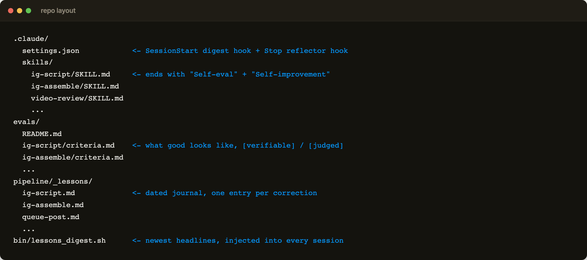
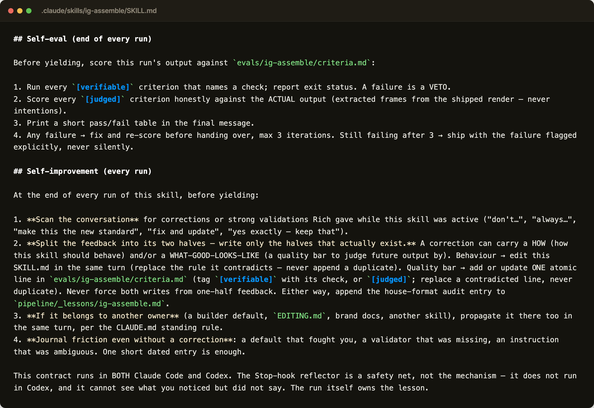
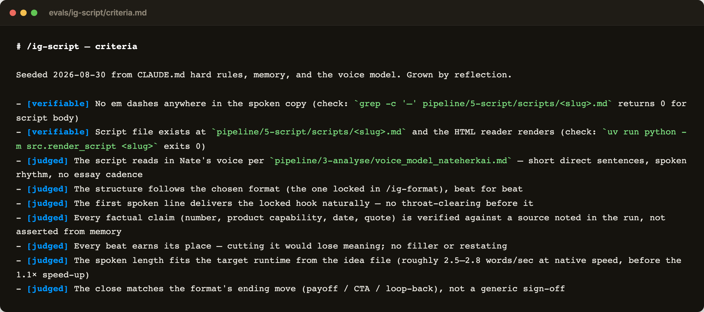
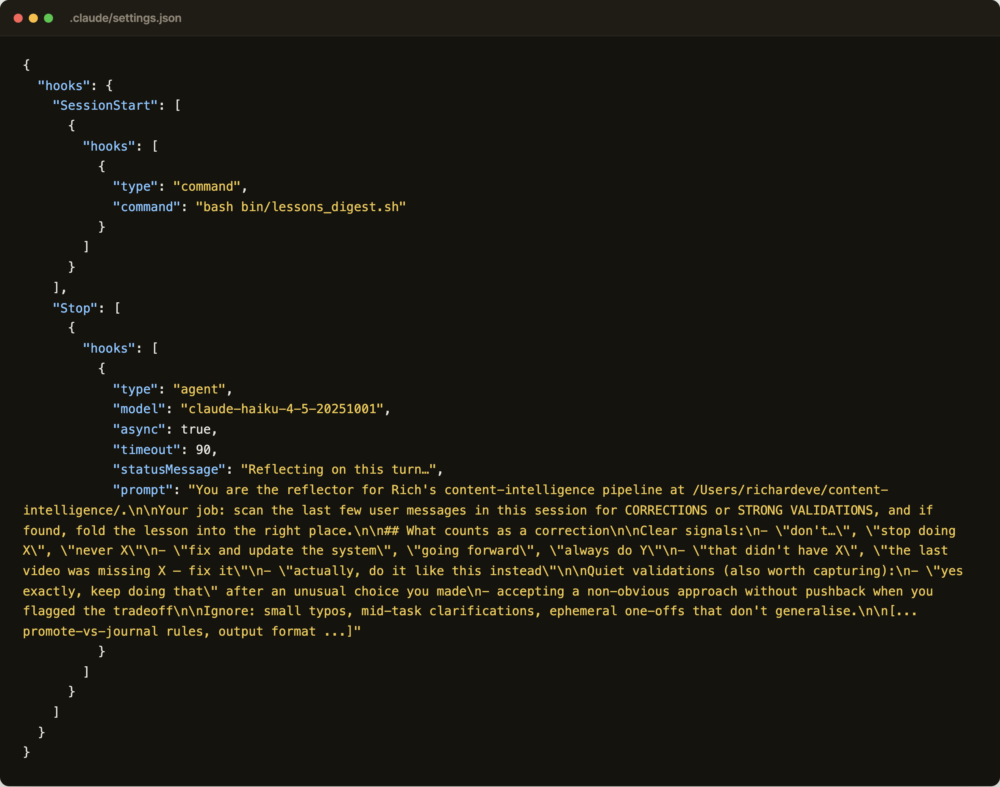
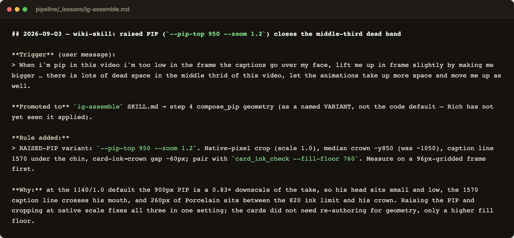
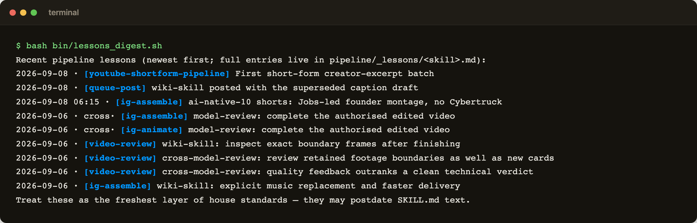
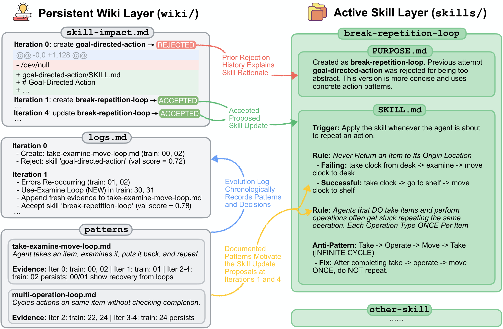

Skills that get better every time you run them.
You commented "SKILLS". Here it is. One prompt that sets up the loop from the video inside your own Claude Code or Codex repo: a criteria file for every skill, a self-check on every run, and your feedback written back into the skill so it never forgets. Plus screenshots of the real thing running on my machine and the Google paper it borrows from. No course, no upsell.
Drop your email and the prompt, the diagrams and the screenshots unlock on this page.
You'll also get the weekly letter: five useful things I made with AI, with the prompts and workflows inside. Unsubscribe any time.
Already on the list? Enter the same email and it unlocks without subscribing you twice.
Stop correcting the same mistake twice.
A skill is a file that tells your agent how to do a job. Most people write it once and then correct the agent in chat forever. The fix is a loop that writes the correction back into the file.
Google Research published the version that started this, called WikiSkill. One agent runs the skill. A second agent reads the traces of that run and writes what went right and what went wrong into a wiki that never resets. A third agent reads the wiki and proposes an edit to the skill. A fourth tests the edit on a held-out set and promotes it if the score goes up, or rolls it back if it does not. The lesson stays in the wiki either way, so a rejected idea informs the next attempt.
Google's loop, redrawn. Four agents, three folders on disk (raw traces, the wiki, the skills).
Your feedback is the training data, not just the agent's.
WikiSkill learns from the agent watching itself. Mine learns from that and from every correction I type in chat. Two files carry it: the skill, and a criteria file that says what good looks like.
Every skill in my repo has a criteria file next to it. When the skill runs, it scores its own output against those lines before it hands anything back, and it iterates until the checks pass. When I correct it in chat, the correction is split in two. If I said how the job should be done, the skill file changes. If I said what a good result looks like, the criteria file gets a line. Both write a dated entry into a lessons journal, and a short digest of the newest entries is injected into every new session, so the agent starts each day already knowing what I corrected yesterday.
One correction, two possible destinations. The skill file learns the process, the criteria file learns the bar.
The part WikiSkill does with a fourth agent, I do with two small hooks. A session-start hook prints the newest lessons. A stop hook runs a cheap model over the last few messages after every turn and folds any correction I gave into the right file, in case the skill itself did not. That is the whole system. Plain Markdown, no database, works the same in Claude Code and Codex.
Paste this once in your repo.
Open Claude Code or Codex at the root of a repo that already has a few skills, paste the whole thing, and read every diff it shows you before you say yes.
You are setting up a self-improvement loop for the skills in this repo. It is modelled on Google Research's WikiSkill (arXiv 2608.27454), but driven by MY feedback as well as the agent's own observations. Work in this order and show me every diff before you write it.
1. INVENTORY. List every skill in .claude/skills/*/SKILL.md (Codex: .agents/skills). One line each: what it produces and who reads the output.
2. CRITERIA FILE PER SKILL. Create evals/<skill>/criteria.md, seeded only from rules that already exist in that SKILL.md, in CLAUDE.md / AGENTS.md, or in my past corrections in this conversation. One atomic line per criterion, each tagged:
- [verifiable] plus the exact command or check that proves it (exit 0 = pass)
- [judged] for a quality bar you will score by looking at the real output
Never duplicate a line. A new rule replaces the line it contradicts. Add evals/README.md explaining the format and the two tags.
3. SELF-EVAL CONTRACT. Append to every SKILL.md a section "## Self-eval (end of every run)": before yielding, run every [verifiable] check (a failure is a veto), score every [judged] line against the ACTUAL output (never intentions), print a short pass/fail table, fix and re-score on any failure, max 3 iterations, then ship with any remaining failure flagged explicitly, never silently.
4. SELF-IMPROVEMENT CONTRACT. Append "## Self-improvement (every run)": scan this conversation for corrections or strong validations I gave while the skill was active ("don't...", "always...", "make this the standard", "yes exactly, keep that"). Split each one into its two halves and write only the halves that exist: HOW the job should be done goes into SKILL.md (replace the rule it contradicts, never append a duplicate); WHAT GOOD LOOKS LIKE goes into evals/<skill>/criteria.md as one line. Either way, append a dated entry to pipeline/_lessons/<skill>.md with four fields: trigger (my words, quoted), promoted to (file and section), rule added, why. Journal friction even when there was no correction: a default that fought you, a check that was missing, an instruction that was ambiguous.
5. JOURNAL + DIGEST. Create pipeline/_lessons/README.md describing that entry format, and bin/lessons_digest.sh, which prints the newest 12 "## <date> - <headline>" lines across pipeline/_lessons/*.md.
6. HOOKS (Claude Code). In .claude/settings.json add two hooks:
- SessionStart: run bin/lessons_digest.sh, so every session opens with the freshest corrections already in context.
- Stop: an async agent hook on a small fast model with this prompt: "You are the reflector for this repo. Scan the last few user messages for corrections ('don't', 'stop', 'never', 'going forward', 'always', 'fix and update') or strong validations ('yes exactly, keep doing that'). Ignore typos and one-off clarifications. Decide which SKILL.md the lesson shapes; if you cannot tell, journal only. If it generalises, edit that SKILL.md (replace the contradicted rule) and/or add one line to evals/<skill>/criteria.md, then append the four-field entry to pipeline/_lessons/<skill>.md. Never edit code. Never touch files outside .claude/skills, evals and pipeline/_lessons."
If I also use Codex, add a short note to AGENTS.md: it has no hook runner, so it must run bin/lessons_digest.sh itself at session start and honour the same two contracts.
7. STEERING. Add a small /learnings skill that can show the last lessons, undo one, remove one, or blocklist a topic the reflector should ignore, so I stay in control of what the loop writes.
8. PROVE IT. Run one skill end to end and show me its pass/fail table. Then take this fake correction, "always put the summary first", and show me the SKILL.md diff, the criteria line, and the journal entry it produces.
Rules: plain Markdown only. Never invent a rule I did not give or that is not already in this repo. Show me every edit before you write it. When in doubt, journal instead of promoting.Six screenshots from my repo.
This is the loop running on the pipeline that makes my videos. Same files the prompt will create for you, filled in by a few months of corrections.
The layout. Skills, criteria and lessons sit in three folders, and one shell script prints the digest.

The contract at the end of every skill. Self-eval scores the output before it ships. Self-improvement folds your corrections back in.

A criteria file. Verifiable lines name the command that proves them. Judged lines are the bar the model scores itself against.

The two hooks. Session start prints the digest. Stop runs the reflector on a small model after every turn.

What a lesson looks like once it is written. My words, where the rule went, the rule, and why.

And the digest every new session opens with. The agent reads yesterday's corrections before I type a word.

The numbers Google reported.
Averaged over five benchmarks, WikiSkill lifted Gemini 3.5 Flash from 49.5 to 68.1. A 9B model with evolved skills beat a 27B model without them.
| Model | No skills | WikiSkill |
|---|---|---|
| Gemini 3.5 Flash | 49.5 | 68.1 |
| Qwen 3.6 27B | 39.4 | 63.3 |
| Gemma 4 31B | 41.3 | 54.9 |
| Qwen 3.5 9B | 29.9 | 47.4 |
The ablation is the part to remember. Remove the persistent wiki and the score drops from 63.7 to 48.7. The knowledge base that never resets is the whole point, which is why the lessons journal in the prompt above is not optional.

The paper's own figure. Three folders on disk and four agents around them.

What the wiki contains. It looks a lot like a Claude Code skills folder, which is not a coincidence.
WikiSkill: Compiling Agent Experience into Persistent Knowledge for Skill Evolution
Read the paper →kenhuangus/wikiskill on GitHub
See the code →Pick one. Do it today.
Reading this does nothing. The loop only compounds once it is installed and you start correcting the agent in chat like you normally would.
- If you already have skills in a repo: paste the prompt from 03, approve the diffs, then give it one real correction and check the journal entry appeared.
- If you have no skills yet: write one first. Take the task you repeat most, ask the agent to write a SKILL.md for it, run it twice, then come back to 03.
- If you use Codex, not Claude Code: everything works, only the hooks in step 6 are Claude-specific. The AGENTS.md note covers the gap, you run the digest yourself.
- If it writes a rule you disagree with: that is what the /learnings skill in step 7 is for. Undo it, and blocklist the topic if it keeps coming back.
See what's possible. Then build it.
You're on the list now. Every week you'll get five useful things I made with AI, with the prompt or workflow behind each one. This setup was one of them.
Back to the site